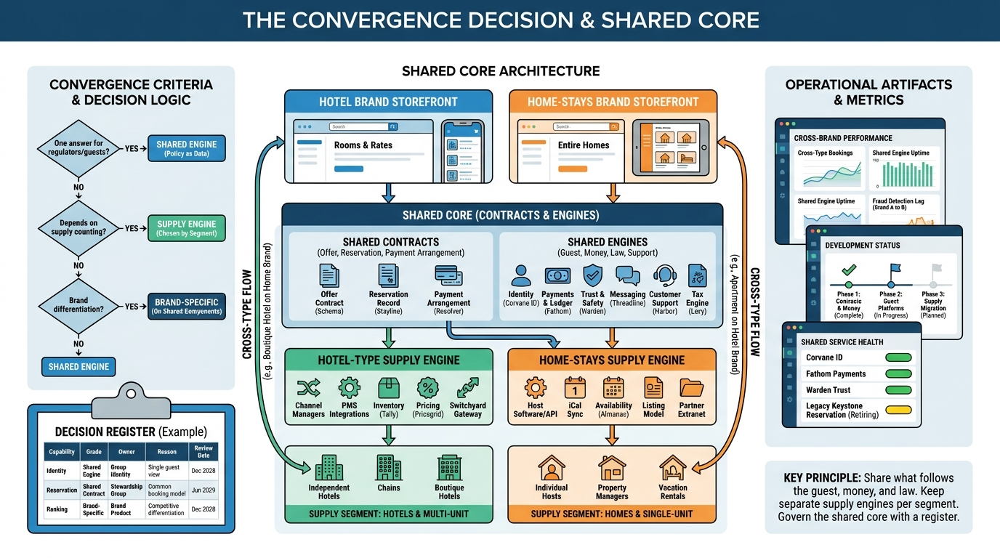

Part IX — LEADERSHIP: The Chief Architect's Agenda
One Platform or Two? Converging Hotels and Homes

Image generated by Google Gemini (gemini-3-pro-image-preview)
Part IX — LEADERSHIP: The Chief Architect's Agenda

Image generated by Google Gemini (gemini-3-pro-image-preview)